小王子 The Little Prince
第15章
第15章
“这挺有趣，”小王子说，“啊，这才是真正的职业！”说着他朝地理学家的星球四周望了一眼。他还从没见过这么雄伟壮丽的星球哩。
“您的星球真美。它有海洋吗？”
“这我没法知道，”地理学家说。
“哦！”小王子有点失望。“那么山脉呢？”
“这我没法知道，”地理学家说。
“城市、河流和沙漠呢？”
“这我也没法知道，”地理学家说。
“可您是地理学家呀！”
“一点不错，”地理学家说，“但我不是探险家。我这里一个探险家也没有。地理学家是不出去探测城市、河流、山脉、海洋和沙漠的。地理学家非常重要，他不能到处闲逛。他从不离开自己的书房。不过他会在那里接见探险家。他向他们提问，把他们的旅行回忆记下来。要是他觉得他们中间哪个人的回忆有意思，他就会让人对这个探险家的品行作一番调查。”
“这是为什么？”
“因为一个说谎的探险家会给地理书带来灾难性的后果。一个贪杯的探险家也是如此。”
“这是为什么？”小王子问。
“因为酒鬼会把一样东西看成两样东西。这样一来，地理学家就会把明明只有一座山的地方写成有两座山了。”
“我认识一个人，”小王子说，“他当探险家就不行。”
“这有可能。所以，要等到了解探险家品行良好以后，才对他的发现进行调查。”
“去看一下？”
“不。这太复杂了。地理学家只要求探险家提供物证。比如说，他发现了一座大山，地理学家就要求他带一块大石头来。”
地理学家忽然激动起来。
“嗨，你是大老远来的！你是探险家！你给我说说你的星球！”
“说着，地理学家打开笔记本，削了支铅笔。地理学家一开始只用铅笔记下探险家讲的话。要等到这个探险家提供物证以后，才换用钢笔来记录。
“怎么样？”地理学家问。
“哦！我那儿，”小王子说，“并不很有趣，那是颗很小的星球。我有三座火山。两座活火山，一座死火山。不过这也说不定。”
“这可说不定，”地理学家说。
“我还有一朵花儿。”
“花儿我们是不记下来的，”地理学家说。
“这是为什么？花儿是最美的呀！”
说着，地理学家打开笔记本，削了支铅笔。地理学家一开始只用铅笔记下探险家讲的话。要等到这个探险家提供物证以后，才换用钢笔来记录。
“怎么样？”地理学家问。
“哦！我那儿，”小王子说，“并不很有趣，那是颗很小的星球。我有三座火山。两座活火山，一座死火山。不过这也说不定。”
“这可说不定，”地理学家说。
“我还有一朵花儿。”
“花儿我们是不记下来的，”地理学家说。
“这是为什么？花儿是最美的呀！”
“意思就是‘随时有消逝的危险’。”
“我的花儿随时有消逝的危险吗？”
“当然。”
“我的花儿是转瞬即逝的，”小王子想道，“她只有四根刺可以自卫，可以用来抵御这个世界！而我却丢下她孤零零地在那儿！”
想到这儿，他不由得感到了后悔。不过他马上又振作起来：
“依您看，我再去哪儿访问好呢？”他问。
“地球吧，”地理学家回答说，“它的名气挺响……”
想到这儿，他不由得感到了后悔。不过他马上又振作起来：
“依您看，我再去哪儿访问好呢？”他问。
“地球吧，”地理学家回答说，“它的名气挺响……”